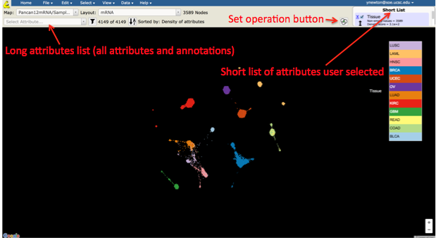
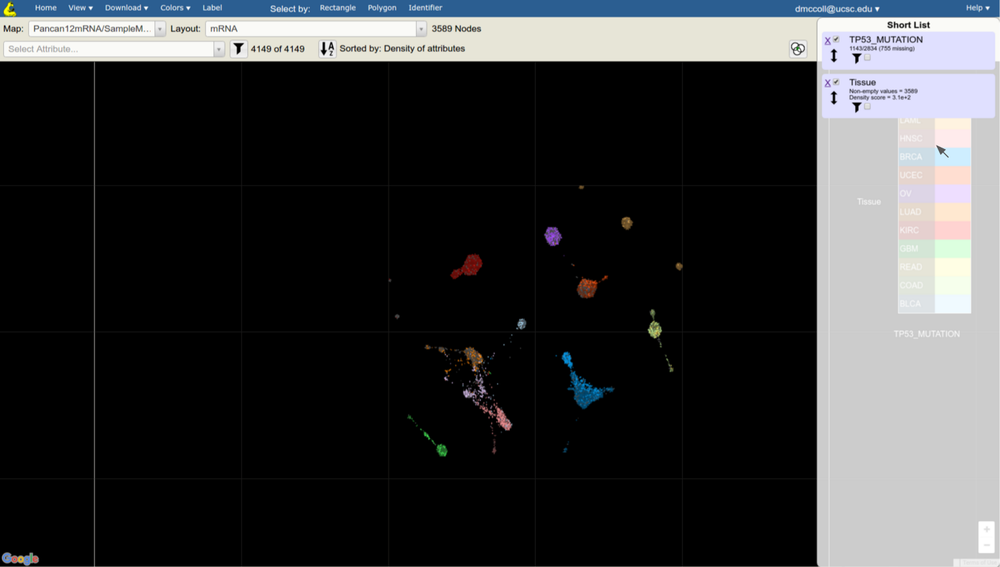
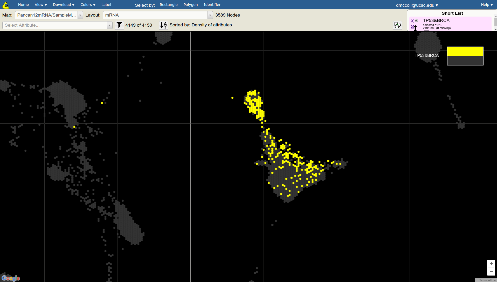

Objectives:
- View all of the samples that share a particular genomic alteration of interest (e.g. TP53 mutation).
Skills Covered:
- Familiarity with the attribute drop down list
- Familiarity with using a “Short List” of user selected/defined attributes.
- Set Operations to create new attributes derived from existing attributes.
- Exporting a list of sample identifiers into a downloadable file.
- Get started with selecting samples on a Tumor Map. The Tumor Map UI provides users with a Select Attributes drop down that contains full list of sample annotations and attributes (long list) from which to choose attributes of interest, and a Short List that allows users more fine-tuned control of map operations.
- In this tutorial we will go through how to select attributes of interest, and then perform an intersection set operation to create a new custom attribute. Let’s say we are interested in viewing breast cancer samples that also have TP53 mutations, and then downloading a list of their sample IDs.

- In Select Attributes drop down select Tissue and TP53_MUTATION attributes by typing in the beginning of the attribute name and clicking on the appropriate selection in the drop down list. This will copy the Tissue and TP53_MUTATION attributes from the long to the Short List
NOTE: Tissue attribute might already be in the Short List as the default.

- In Select Attributes drop down select BRCA Subtype attribute by typing in the beginning of the attribute name and clicking on the appropriate selection in the drop down list.

- Click on the “Set Operation” button. Its placement is shown in the illustration below:
- In the popup screen select Intersection for the desired set operation and select TP53_MUTATION as the first attribute and Tissue as the second attribute. Next to the TP53_MUTATION click on the value drop down and click on 1. Next to the Tissue click on the value drop down and select BRCA; click on Compute Set Operations button
- Enter the desired name of this new custom group of samples (e.g. TP53_BRCA)
- Observe that the new group appears as a custom attribute in the Short List
- In the Short List uncheck all the attributes and click on TP53_BRCA attribute, so it is the only one that has a checkmark next to it
- Observe that the TP53 BRCA mutants are highlighted in the map
- Click on Download menu and select Identifiers
- In the popup box make sure the TP53_BRCA is selected
- Save this group to a local file using your browser’s file download functionality
NOTE: You can just copy the sample IDs to the local computer memory by clicking into the box that contains the IDs to highlight them and then right clicking and selecting Copy